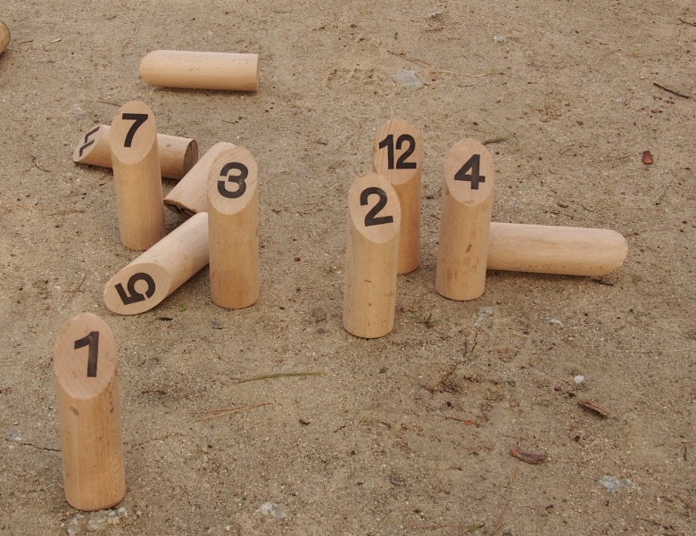

Características generales y Objetivo
El Mölkky es un juego de lanzamiento de precisión de origen finlandés, llamado también “Bolos Finlandeses”.
Estrategia, azar y precisión definen a este juego.
El objetivo es conseguir 50 puntos derribando los bolos que están numerados del 1 al 12.
Las características del juego hacen que sea muy inclusivo. Ideal para practicar con toda la familia o amig@s.
Historia
El Mölkky es un juego tradicional de origen escandinavo. Se dice que Mölkky es una variación del juego llamado Kyykkä que se practicaba a finales del S. XIX.
Actualmente es un juego muy popular en Finlandia donde existen multitud de asociaciones y desde el 1997 se juega el Campeonato del Mundo en la ciudad de Lahti. El mundial de 2016 se celebrará en Le Rheu (Francia).
El juego está también extendido por el norte y centro de Europa, por Estados Unidos y Japón.
En España desde el 2012 se juega el Torneo Nacional de Mölkky de Laguna de Duero (Valladolid), organizado por el “El Anillo Único”.
La Asociación Internacional Mölkky finlandés (FIMA) fue fundada en 2001 para promover la popularidad y el conocimiento de Mölkky.
Terreno de Juego y Material
- Los bolos se sitúan inicialmente de 3 a 4 m. del lugar de lanzamiento, llamado Mölkkframe o Mölkkarri.
- Todos los materiales son de madera. El palo lanzador se llama “Mölkky” mide 22´5cm. de largo por 5´5cm. de diámetro.
- Los palos a derribar o “Bolos” miden 9´5-15cm. de largo por 5´5cm. de grueso. Son de forma cilíndrica y están cortados con un ángulo de 45º en el extremo superior.
- Hay 12 bolos enumerados del 1 al 12. Se sitúan al comienzo de juego según el gráfico adjunto. Las dimensiones pueden ser menores si se juega en interior.
- Se puede jugar a nivel individual, por parejas o por equipos de hasta 6 jugadores
Principales Reglas
- El juego se lleva a cabo entre dos o más equipos.
- El orden del lanzamiento en el primer juego será al azar, en los juegos siguientes el orden de lanzamiento será desde la menor hasta la mayor puntuación de los resultados obtenidos en el juego anterior
- El “Mölkky” siempre es lanzado con la mano por abajo.
- No se considera bolo caído si cae encima de otro ó sobre el Mölkky.
- Si cae sólo “1 bolo”, los puntos corresponden al número del bolo caído.
- Cuando caen más de un bolo, se anotan el número de bolos caídos.
- Después de cada lanzamiento, poner los bolos en el lugar exacto en donde cayeron.
- Si un jugador o jugadora no acierta (no tiene puntuación) si le sucede lo mismo en tres ocasiones consecutivas, queda fuera del juego y actúa como el encargad@ de cuenta.
- El juego termina cuando el primer jugador-a alcance exactamente los 50 puntos. Si anota más de 50 puntos, a este jugador-a se le rebajará su marcador a 25 puntos.
Variantes
- El Mölkout es un juego rápido para situaciones de empate. Se necesitan cinco bolos. Ponerlos en una fila a una distancia de 3,5 metros de la Mölkkframe o Mölkkarri de manera que el primero es el bolo número 6, a continuación, 4, 12, 10 y 8. Entre cada bolo hay una distancia que es la misma que la longitud del bolo de lanzamiento (Mölkky) = 225 mm
- Se puede jugar con la aplicación app “Molkky Scorer”. Que tiene varias variantes. Una variante incluida en dicha aplicación es el “ZAP”, en caso de igualar la puntuación de otro jugador se le hace retroceder a cero si éste no se ha sobrepasado los 25 puntos o a 25 si se ha sobrepasado dicha puntuación.